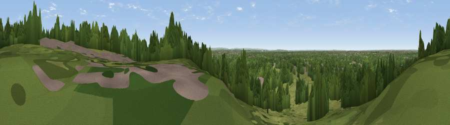

Viewpoint near Richmond
#40628 in England · top 36% of its area beats it · near RichmondWhere it is
The exact computed spot (TQ 18614 72890). Click the marker for map links.
The view, rendered

A 360° render of this exact spot computed from the terrain model, tree cover and land cover — summer colours, afternoon light, calibrated against photographs of famous viewpoints. Real trees, hedges and buildings will differ in detail.
The panorama
Grey silhouette: terrain skyline in each direction (720 bearings, Earth curvature and refraction included). Dashed green: skyline with trees (+15 m) and buildings (+8 m) as obstacles. Blue strip: how far the ground is visible on each bearing.
Where the view opens
Wedge length = distance to the farthest visible ground on that bearing (vegetation-aware). Rings at 10, 25 and 50 km.
What fills the view
50% woodland · 36% grassland · 13% built-up ·
Angular shares of the visible panorama (visual magnitude), not map area. Landscape diversity 0.45 (0–1 Shannon).
Key numbers
More beautiful places nearby
The staircase of upgrades: each row has a higher view potential than everything closer. Driving times are estimates from straight-line distance, calibrated against real road routing — check an actual route before setting out.
| Place | Direction | Drive | Score |
|---|---|---|---|
| Viewpoint near Richmond | N · 0 km | ~1 min | 28.4 |
| Viewpoint near Esher | SSW · 9 km | ~18 min | 29.5 |
| Viewpoint near Esher | SW · 10 km | ~19 min | 30.2 |
| Viewpoint near West End | SSW · 11 km | ~21 min | 30.4 |
| Viewpoint near Northolt | NNW · 12 km | ~23 min | 37.7 |
| Harrow on the Hill | NNW · 15 km | ~27 min | 42.3 |
| Viewpoint near Buckland | S · 20 km | ~35 min | 52.5 |
| Viewpoint near Buckland | S · 21 km | ~35 min | 52.7 |
51.44259, -0.29471 · source: osm viewpoint · position refined by local search. Computed location — check access rights before visiting.